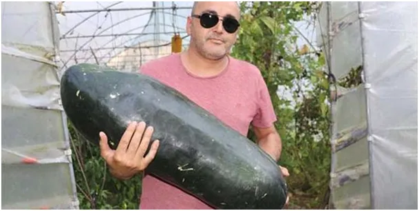
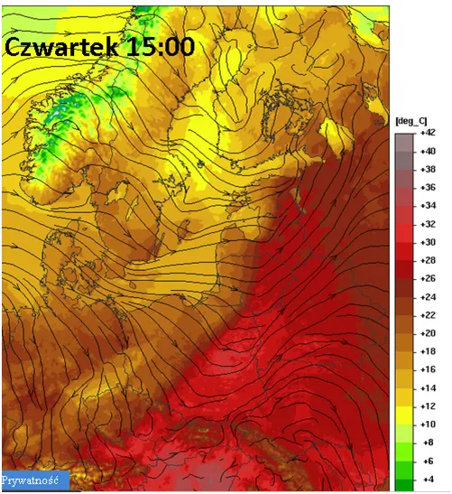
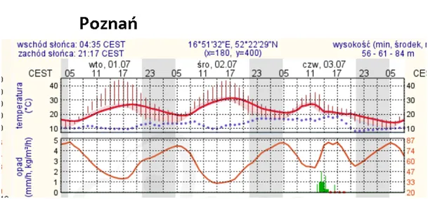
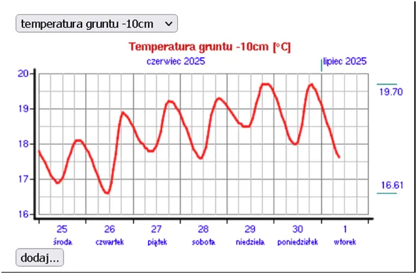

W końcu upał! Co na to ogórki i cukinie?
Ale potrwa tylko 2 doby na zachodzie i trochę dłużej na wschodzie. W czwartek deszczowy front szybko wypchnie gorące powietrze na wschód i przyniesie szybką wegetację warzyw. Absurdalne ceny ogórków powinny spadać.

Meteogram dla Poznania pokazuje, że o świcie utrzyma się 20 st., C, jeśli o północy będzie nie mniej niż 25 st. C to taką noc nazywamy tropikalną.

W Polsce takich nocy w roku mamy kilka, więc to dobra okazja, aby biwakować w dobrym towarzystwie. W tym czasie ogórki będą nabierały wagi, ale nie grożą nam takie jak ta 21 kg cukinia wyhodowana w Turcji, gdzie noce tropikalne występują przez 4 miesiące, jest ich więc ponad 120 w roku.

Ostatni wykres temperatury gruntu (-10 cm) dla Mazowsza, pokazuje, że jest blisko 2 st. C mniej niż zwykle o tej porze roku, co mieszkańcy wschodniej Polski odczuwają od wielu miesięcy. Czwartkowy ciepły deszcz zmagazynuje energię upału i przekaże ją go gruntu, co na wschodzie Polski trochę zniweluje zaległości w wegetacji roślin. Tak to przyroda radzi sobie z kaprysami Atlantyku.
Paweł Klimczewski